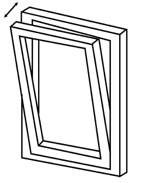
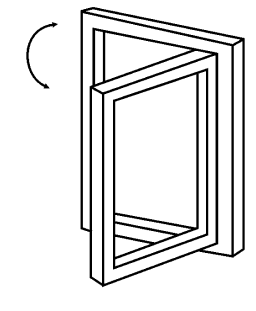
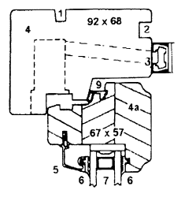
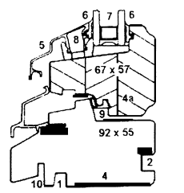
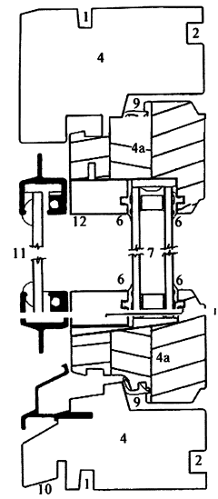
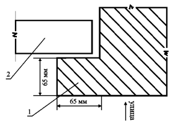
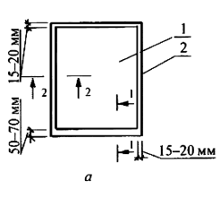
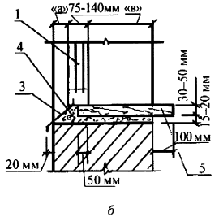
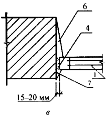
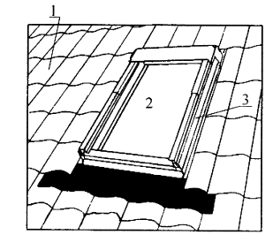

Современная индустрия окон.

Современная индустрия выпускает оконные блоки и балконные двери:
• с двойным;
• с тройным остеклением.
Блок с двойным остеклением представляет собой раму со стеклопакетом из двух стекол. Толщина такого стеклопакета 24 мм (2 стекла по 4 мм и 16 мм промежуток между ними). Как показал опыт, толщина в 24 мм дает наилучший эффект с точки зрения энергосбережения.
Стеклопакет герметично заделан в переплет, что исключает доступ воздуха внутрь него. За счет использования специального устройства стекла внутри стеклопакета не запотевают и не замерзают.
Традиционное остекление двойными рамами, которое распространено в сельской местности, мы не рассматриваем, так как оно имеет много недостатков: отсутствие герметичности, стекла запотевают и замерзают.
Блок с тройным остеклением собирается:
• из первой рамы со стеклопакетом из двух стекол (толщина стеклопакета 24 мм);
• второй рамы с одинарным стеклом. Вторая рама открывается для чистки стекол.
Между первой и второй рамами можно разместить жалюзи и противомоскитную сетку.
Современные оконные блоки и балконные двери имеют надежную герметизацию и уплотнители, позволяющие резко сократить потери тепла через окна и балконные двери. В целях еще большего сокращения теплопотерь (в отдельных случаях до 60 %) и улучшения энергосбережения воздух внутри стеклопакета заменяется на инертный газ (аргон, криптон). Кроме повышенной теплоизоляции такие блоки обладают еще и хорошими звукоизоляционными свойствами. Оконные блоки и балконные двери с двойным остеклением целесообразно использовать в климатических районах с теплой зимой, т. е. в южных районах страны. Оконные блоки и балконные двери с тройным остеклением очень хорошо подходят для центральных и северных районов России.
В настоящее время для изготовления переплетов в окнах и балконных дверях используются самые разнообразные материалы:
1. Дерево.Его традиционно используют для изготовления переплетов фирмы России, Финляндии, Швеции, Норвегии. Оконные блоки и балконные двери выпускаются как с чисто деревянными переплетами, и так и с деревянными переплетами, защищенными со стороны улицы алюминиевыми профилями.
Алюминиевые профили располагают с наружной стороны окна на расстоянии 6 мм от деревянной рамы, что обеспечивает хорошее проветривание и высыхание древесины. Алюминиевая облицовка служит как бы зонтиком, который защищает окно от ветра и влаги, а также от ультрафиолетовых лучей.
Деревянные конструкции окна и алюминиевая облицовка обрабатываются лаком путем напыления (существует широкий спектр цветов), что является очень долговечным и прочным покрытием. Большинство фирм выпускают самые разнообразные деревянные оконные блоки и балконные двери по индивидуальным заказам, отвечающие повышенным требованиям к энергосбережению и долговечности (с двойным или тройным остеклением, с вентиляционной прорезью и без нее, с жалюзями и противомоскитной сеткой, с алюминиевой облицовкой и без нее и т. п.).
2. Пластик ПВХ.Такие оконные блоки и балконные двери изготавливают страны Европы и российские фирмы по западной технологии. Несмотря на широкую рекламу, к блокам из пластика надо относиться с осторожностью, так как автоматический перенос западных технологий, которые создавались для более мягкого климата Европы, в наши, более жесткие условия, приводи к нежелательным последствиям (рамы деформировались и теряли свои эксплуатационные качества).
Учитывая изложенное, при покупке пластиковых окон и балконных дверей надо выяснить у фирмы:
• есть ли сертификат соответствия Минстроя России на эту продукцию;
• какими конструктивными мероприятиями, учитывающими специфику более жесткого климата России, дополнена западная технология по изготовлению оконных блоков и балконных дверей из ПВХ;
• какой опыт эксплуатации своих изделий в России имеет эта фирма.
3. Стеклокомпозит.До недавнего времени стеклокомпозит использовался в самолето-, судо-и ракетостроении. Новые технологии позволили использовать этот материал для массового применения, например, для изготовления оконных блоков и балконных дверей. Стеклокомпозит – профиль, состоящий на 70 % из стекловолокна, связующим для которых является термореактивная смола.
Как композиционный материал стеклокомпозит обладает целым рядом достоинств:
• абсолютная стабильность, явление искривления отсутствует. Подобно любому композиционному материалу он «помнит» свою форму;
• стеклокомпозит имеет коэффициент линейного расширения такой же, как и стекло, что полностью снимает напряжение в системе рама – стекло. В этом смысле переплет из стеклокомпозита и стеклопакет– идеальная пара. Это соответствие материалов гарантирует надежность герметизации в местах уплотнений и стыковок. Для сравнения: пластик ПВХ имеет в 15–20 раз более высокий коэффициент линейного расширения. Так, при перепаде температур в интервале -20…+20 °C прямолинейный элемент длиной 75 см деформируется более чем на 3 мм;
• высокие прочностные характеристики стеклокомпозита позволяют изготавливать оконные блоки и балконные двери без использования металлических профилей (для увеличения жесткости);
• экологическая безопасность. Согласно заключению органов санитарно-эпидемиологического надзора РФ оконные блоки и балконные двери из стеклокомпозита не имеют ограничений в применении;
• стеклокомпозит является трудносгораемым материалом, не подверженным размягчению под воздействием температуры, чем выгодно отличается от дерева и пластика ПВХ;
• энергоэффективность конструкций. Отсутствие в профилях из стеклокомпозита стальных элементов, имеющих большую теплоемкость, улучшают теплоизоляционные качества оконных блоков и балконных дверей.

Рис. 1. Позиция окна «для проветривания»

Рис. 2. Позиция окна «для мытья»
Изделия имеют сертификат соответствия Минстроя России. Изготовление оконных блоков и балконных дверей освоили ООО «Стеклопластик-Компонент+» по технологии канадской фирмы Inline Fiberglass Ltd.
Современные окна изготавливают с возможностью открывания в двух плоскостях двумя способами: закреплено снизу для проветривания, закреплено сбоку для мытья (рис. 1 и 2).
В позиции «для проветривания» окно открывается приблизительно на 100 мм наверху.В этом случае теплый, использованный воздух выходит наружу через верхнюю щель, а холодный воздух поступает с улицы в помещение через боковые щели. При таком способе проветривания от окна не так дует, как при обычном открывании. Из открытого таким способом окна ничто не может выпасть на улицу.
В позиции «для мытья» окно открывается полностью, на полную свою высоту вовнутрь помещения.В этом случае оно может быть вымыто с обеих сторон из комнаты. Кроме того, такое открывание очень важно в случае пожара при экстренной эвакуации. В позиции «для мытья», конечно, тоже можно проветрить помещение, но оно менее комфортно, чем в позиции «для проветривания».
Оконные блоки выпускаются как с дополнительной вентиляционной прорезью в верхней части оконной рамы, так и без нее. Эта вентиляционная прорезь открывается по желанию с внутренней стороны и в ней установлена сетка от насекомых. С внешней стороны прорезь невидима. Минимальная ширина окна, в котором сетка может быть установлена – 538 мм. Такая вентиляция позволяет производить медленный воздухообмен помещения, не открывая окон.
Оконные блоки выпускаются разной ширины от 75 до 140 мм.
Внимание
При кладке кирпичной стены оконные проемы, как правило, выполняются с «четвертью», с наружной стороны «четверть» устраивается для уменьшения продувания шва между оконным блоком и стеной.
В настоящее время с появлением новых материалов, надежно защищающих от продувания и теплопотерь (например, когда швы между оконным блоком и стеной заделываются строительной пеной), оконные проемы могут устраиваться без «четвертей».


Рис. 3. Деревянный оконный блок с двойным остеклением и алюминиевой облицовкой:
1 – паз для соединения отдельных оконных блоков в единое целое (если это требуется); 2 – паз для установки футеровки (обкладки вокруг окна); 3 – вентиляционная прорезь, имеющая внутри сетку от насекомых (выполняется по желанию заказчика); 4 – вакуумимпрегнированная ель, защищенная от гниения, грибков и насекомых; 4а – ламинированная вакуумимпрегнированная ель; 5 – алюминиевый профиль; 6 – резиновый уплотнитель с проволокой внутри во избежание растяжения; 7 – воздушное пространство между стеклами в 16 мм является наиболее оптимальным; 8 – пластмассовая колодка, удерживающая алюминиевый профиль в нужном положении; 9 – резиновый уплотнитель между окном и оконной рамой; 10 – паз для установки водослива
Для крепления оконных блоков в кладке стены необходимо заложить деревянные пробки размером 120x120x65 (h) мм, не менее чем по две штуки с каждой стороны проема. Шов по периметру между оконным блоком и стеной должен быть тщательно заполнен строительной пеной. При кладке стен оконные проемы по ширине должны быть больше на 30–40 мм ширины оконного блока (по 15–20 мм с каждой стороны) и по высоте – больше на 6590 мм высоты оконного блока.

Рис. 4. Деревянный оконный блок с тройным остеклением и алюминиевой облицовкой:
1 – паз для соединения отдельных оконных блоков в единое целое (если это требуется); 2 – паз для установки футеровки (обкладки вокруг окна); 4 – вакуумимпрегнирован-ная ель, защищенная от гниения, грибков и насекомых; 4а – ламинированная вакуумимпрегнированная ель; 6 – резиновый уплотнитель с проволокой внутри во избежание растяжения; 7 – воздушное пространство между стеклами в 16 мм является наиболее оптимальным; 9 – резиновый уплотнитель между окном и оконной рамой; 10 – паз для установки водослива; 11 – вторая рама; 12 – расстояние между первой и второй рамами для большей тепло– и звукоизоляции
Со стороны улицы для защиты от атмосферных осадков в нижней части окна устанавливается отлив, как правило, металлический.Отлив обычно окрашивается в тот же цвет, что и оконные блоки с уличной стороны. Чтобы вода не попадала на стену, край отлива должен быть отнесен от стены не менее чем на 20 мм. Другой конец отлива заделывается в специальный паз оконного блока.
Со стороны помещения устанавливается подоконная доска.Подоконные доски бывают деревянные, ламинированные, из натурального камня (например, мраморные) и т. п. Один конец подоконной доски заделывается под оконный блок на глубину 50 мм, другой конец имеет свес в сторону помещения 100 мм и более.

Рис. 5. Схема проема с «четвертью»:
1 – четверть; 2 – оконный блок
Размеры отлива и подоконной доски вычисляются следующим образом:
• длина отлива и подоконной доски должна равняться ширине оконного проема: глубина отлива назначается исходя из размера «а» (обычно это 65–70 мм) плюс 20 мм;
• глубина подоконной доски равняется «в» плюс 50 мм плюс 100 мм.
Мансардные окна.В помещениях мансардного этажа очень часто используются специальные мансардные окна, которые встраиваются непосредственно в скатную крышу (совмещенное с кровлей утепленное перекрытие). Уклон скатной крыши может быть от 15 до 90°.
В качестве примера рассмотрим мансардные окна фирмы «VELUX». Фирма выпускает мансардные окна трех типов:
• тип 1– остекление – двухслойный стеклопакет, раму можно поворачивать на 180°, что позволяет легко мыть ее изнутри;
• тип 2– остекление – энергосберегающий стеклопакет с повышенной прочностью и звукоизоляцией. Окно оборудовано вентиляционным клапаном и воздушным фильтром. Вентиляционная прорезь располагается наверху по всей ширине окна. Раму можно поворачивать на 180°;
• тип 3– остекление – энергосберегающий стеклопакет с повышенной прочностью и звукоизоляцией. Рама имеет комбинированное открывание, т. е. ее можно поворачивать в двух плоскостях.
Окна изготавливаются из ламинированной высококачественной сосны с двойным покрытием водоэмульсионным лаком. Наружная обкладка, выполняемая из алюминия, окрашивается в серовато-коричневый цвет и не требует никакого ухода.



Рис. 6. Схема заполнения оконного проема:
а – фасад; б – сечение 1–1; в – сечение 2–2: 1 – оконный блок; 2 – оконный проем; 3 – отлив; 4 – строительная пена; 5 – подоконная доска; 6 – откос из штукатурки; 7 – откос из штукатурки снаружи
Современные лоджии, балконы и окна
Оклады окон выпускаются двух видов:
• для установки в крышах, покрытых плоскими и низкопрофилированными (высотой менее 8 мм) кровельными материалами. Например, плоские металлические листы;
• для установки в крышах, покрытых волнистыми высокопрофилированными (высотой 8 мм и более) кровельными материалами. Например, черепица, металлочерепица, профилированный настил и т. д.
Оклады обеспечивают водонепроницаемость и эстетичную установку мансардного окна в кровлю. Они окрашены тоже в серовато-коричневый цвет, что и наружная поверхность окон, и поставляются как готовое изделие для каждого размера окон.
Мансардные окна выпускаются следующих размеров: 78x98 (h) см, 78x118 (h) см, 78x140 (h) см, 78x160(h)см,114x118(h)см,114x140(h)см.
Окна могут быть укомплектованы:
• стержнем для открывания высокорасположенных окон (длиной 80 см и от 102 до 183 см),
• шнуром для открывания высокорасположенных окон (длиной 5 м),
• шторой, жалюзи.

Рис. 7. Пример установки мансардного окна:
1 – скатная крыша; 2 – мансардное окно; 3 – оклад